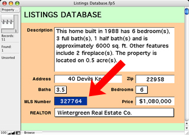
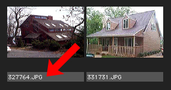

The Ad Builder application, created in AppleScript Studio, demonstrates how the construction of a Real Estate catalog can be automated by controlling off-the-shelf applications via AppleScript.
This publishing example links tagged text and graphic frames in an Adobe InDesign catalog template to corresponding images and text in iView MediaPro and FileMaker Pro database files. This technique is a standard method used in professional automated database publishing workflows.
How It Works
The technique of tagged container publishing relies on a unique identifier existing in both the data sources and the target layout template. The unique identifer can be a product SKU number, a customer number, an address, or even a name, as long as it is unique to the each entry record in the source database files. It the Ad Builder example, the MLS (Multiple Listing Service) number assigned to each of the real estate properties is used as the unique identifer.
In the FileMaker Pro database, the MLS number is the contents of the MLS Number field in the Listings Database:

In iView MediaPro, the MLS number begins the name of the related images in the database file:

To enable the automation of extracting and placing image and text data into a layout, text and graphic frames in an Abode InDesign CS template are tagged with MLS numbers using the Script Label pallette:

Once a template has been tagged, an AppleScript script can be run that performs the following steps:
- The script asks InDesign for a list of references to the text and graphic frames in the open template that have a tag assigned to them.
- The script then iterates the returned list and extracts the tag for each page item in the list of found page items.
- If a page item is a text frame, the script uses the extracted tag to locate a record in the FileMaker Pro database whose MLS Number cell contains the extracted tag.
- The script then extracts the contents of the other cells of the matched FileMaker Pro record and inserts the data into the targeted text frame in the InDesign template. The inserted text is then formatted using stylesheets.
- If a page item is a praphic frame, the script uses the extracted tag to locate an image in the iView MediaPro database whose name begins with the extracted tag.
- The script then imports the image into the target graphic frame and sizes the image to fit the frame appropriately.
Learn More
AppleScript is a powerful tool for gaining speed, accuracy, and consistency through automation. For more information about AppleScript and AppleScript Studio visit the AppleScript website at:
www.apple.com/applescript/